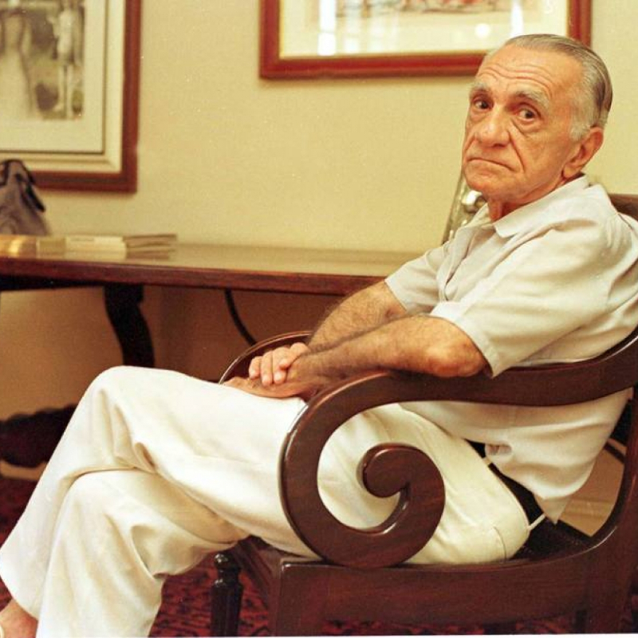
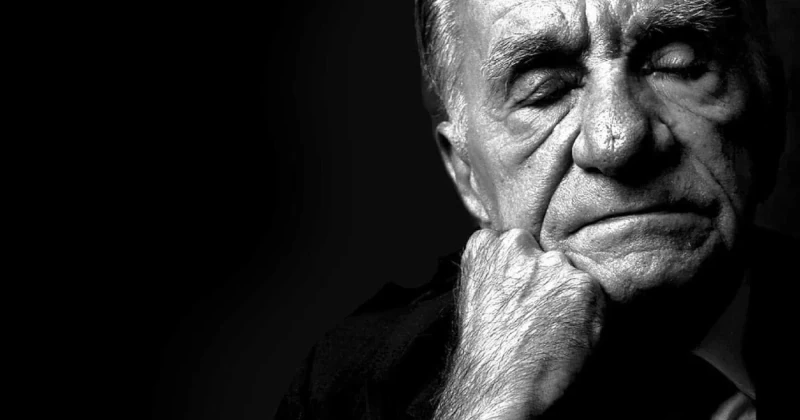
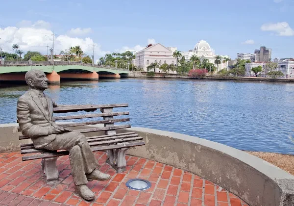
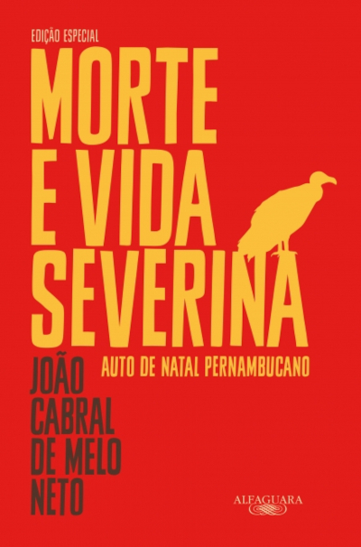

No decorrer das pesquisas e produção do trabalho, tivemos varias experiências juntos. Aprendemos sobre os autores João Cabral de Melo Meto e Francisco Solano Trindade, além de poder ler e conhecer um pouco de suas vidas e obras. As lições que aprendemos com todas essas pesquisas foram de fundamental importância para a construção de nosso aprendizado tanto intelectualmente, quanto referente a aprendizados e experiência de trabalho em equipe.
Alguns membros ficaram responsáveis pela aquisção de imagens, outros pela parte financeira além dos que estavam focados na pesquisa e produção (Montagem) do trabalho, todos focados em um mesmo objetivo. Além disso todos os membros tiveram a oportunidade de estudar sobre os autores e trazer a apresentação durante a feira de conhecimentos.
João Cabral de Melo Neto
João Cabral de Melo Neto (1920-1999) foi um poeta e diplomata brasileiro autor da obra Morte e Vida Severina, poema dramático que o consagrou. Tornou-se imortal da Academia Brasileira de Letras.
Cronologicamente, João Cabral situa-se entre os poetas da Geração de 45, mas trilhou caminhos próprios. Seus primeiros livros apresentam uma poesia hermética, ou seja, de difícil compreensão.
Algumas Obras de João Cabral de Melo Neto
Pedra do Sono (1942)
O Cão Sem Plumas (1950)
Morte e Vida Severina (1956)
A Educação Pela Pedra (1966)
Museu de Tudo (1975)
Agrestes (1985)
Caracteristicas
As obras literárias de João Cabral de Melo Neto são marcadas pelo uso da metalinguagem (muitos dos seus trabalhos falam sobre a própria criação literária). Seus poemas também contêm imagens surrealistas e influência da cultura popular. Em termos de formato, João Cabral primou pela rigidez formal com rimas fixas, ritmo e versos rimados.
Prêmios Recebidos
João Cabral de Melo Neto recebeu o Prêmio da Poesia do Instituto Nacional do Livro, o Prêmio Jabuti da Academia Brasileira do Livro e o Prêmio da União Brasileira de Escritores pelo livro Crime na Calle Relator. Foi eleito membro da Academia Brasileira de Letras para a cadeira n.º 37, tomando posse em 6 de maio de 1969.
Imagens




Francisco Solano Trindade
Francisco Solano Trindade nasceu em Recife, no bairro de São José, filho do sapateiro Manuel Abílio, mestiço de negro com branca, e da quituteira Dona Emerenciana, descendente de negros e indígenas. No Recife, Solano estudou até o segundo grau e chegou a participar, por um ano, do curso de desenho do Liceu de Artes e Ofícios.
Quando ainda era bastante jovem, nasceu o amor de Solano pela poesia e ele começou a compor seus primeiros poemas em meados da década de 20. No início da década seguinte, o poeta foi um dos organizadores e idealizadores do I Congresso Afro-Brasileiro, realizado em 1934 na cidade de Recife e liderado por Gilberto Freyre. Solano também participou em 1937 do segundo congresso Afro-Brasileiro, realizado em Salvador.
Obras de Solano Trindade
Poemas de Uma Vida Simples (1944)
Cantares ao Meu Povo (1963)
Poemas antológicos
Caracteristicas
Sua poesia registra a sua biografia marcada pela paixão pelas mulheres, uma identidade racial e social identificada com negros e com as classes populares e o compromisso com a defesa do que convencionou chamar de tradições culturais do seu povo.
Compromisso presente na produção e encenação de seus espetáculos ligados à cultura popular com o grupo Teatro Popular Brasileiro. O grupo deu origem ao Teatro Popular Solano Trindade, em Embu das Artes, onde sua família mantém viva a memória e a obra do poeta.